README.md for Figures Created 2020/04/22 at 17:13.55
Notes
Rerunning to show actual trajectory in histograms. Previous versions forced the bins to be between the maximum and minimum joint angles. Stiffness was not forced to be anywhere, so this is good news for the stiffness plots.
Parameters
params = {
'Extra Steps' : 5.0,
'stepDuration' : 1.0,
'numberOfSteps' : 200,
'delay' : 0.3,
'angleRange' : None,
'stiffnessRange' : [20, 100]
}Figures
states_01-01.png
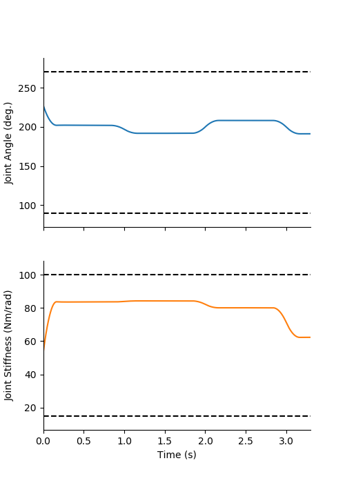
states_01-02.png
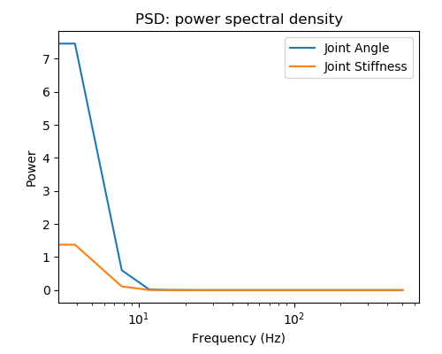
states_01-03.png
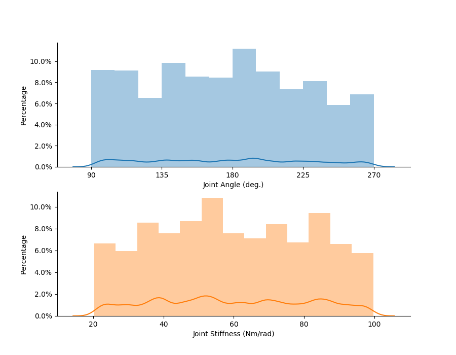
states_01-04.png
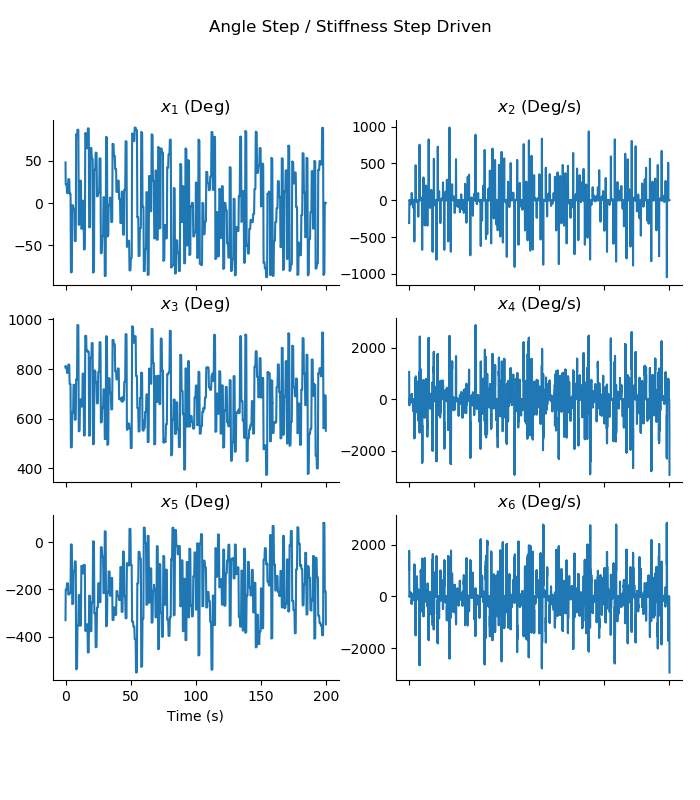
states_01-05.png
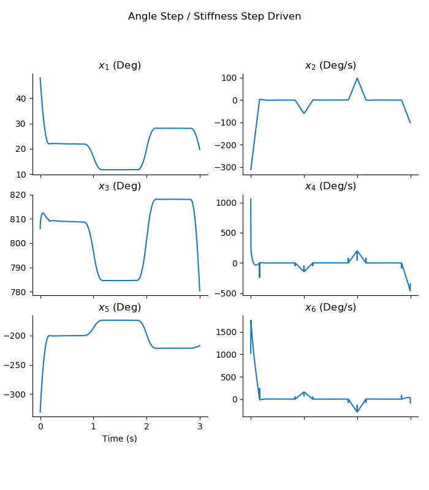
Appended on 2020/04/23 at 18:01.57 PST.
Notes
Point-to-point experiment where it is assumed that the pendulum has reached some arbitrary (uniformly random) point in both joint angle and joint stiffness space such that
- the joint and motors have zero velocity/accelerations, and
- joint/motor angles and motor inputs can be found. A 2D KDE plot will demonstrate that the algorithm uniformly samples both spaces sufficiently, and the trajectory plots will show that the values are within a reasonable range.
Parameters
Figures
equil_P2P_01-01.png
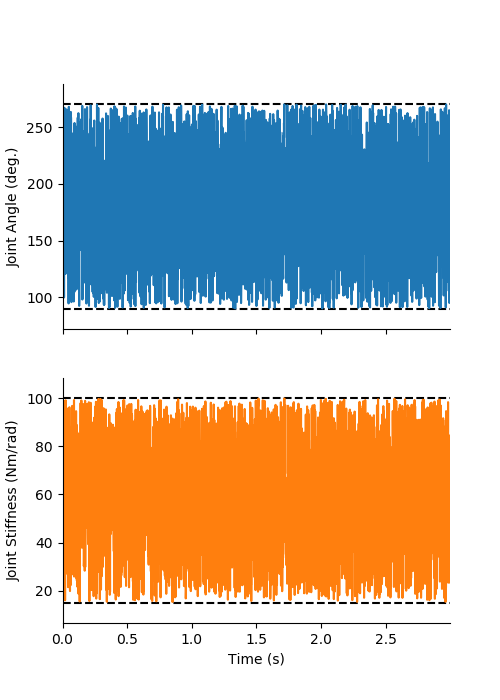
equil_P2P_01-02.png
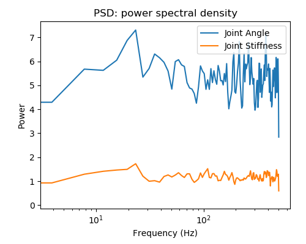
equil_P2P_01-03.png
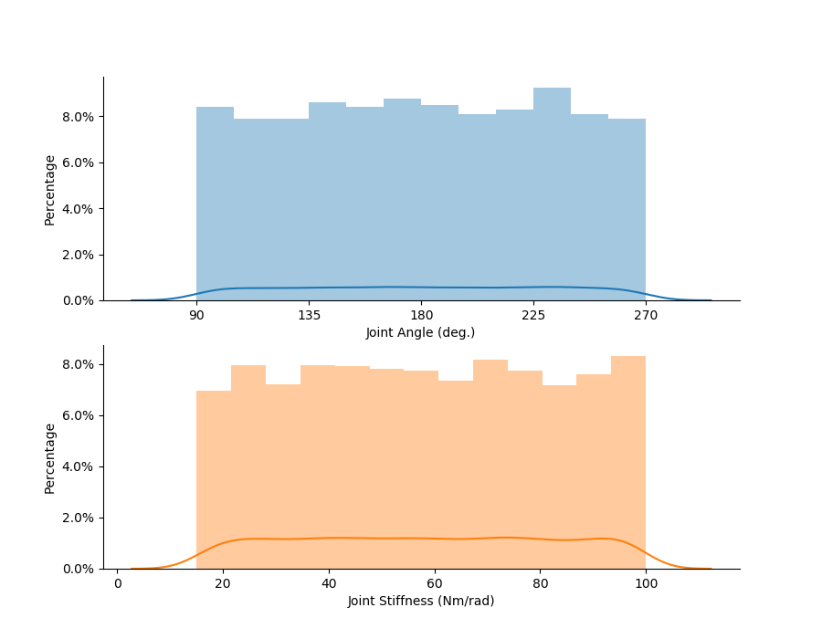
equil_P2P_01-04.png
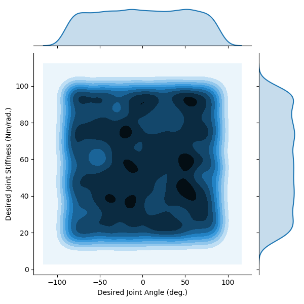
Appended on 2020/04/23 at 18:40.48 PST.
Notes
Changing the step duration to 3 seconds to get more time spent at near the equilibrium posture.
Parameters
params = {
'Extra Steps' : '15',
'stepDuration' : '3',
'numberOfSteps' : '200',
'delay' : '0.3',
'angleRange' : 'None',
'stiffnessRange' : '[20, 100]'
}Figures
states_02-01.png
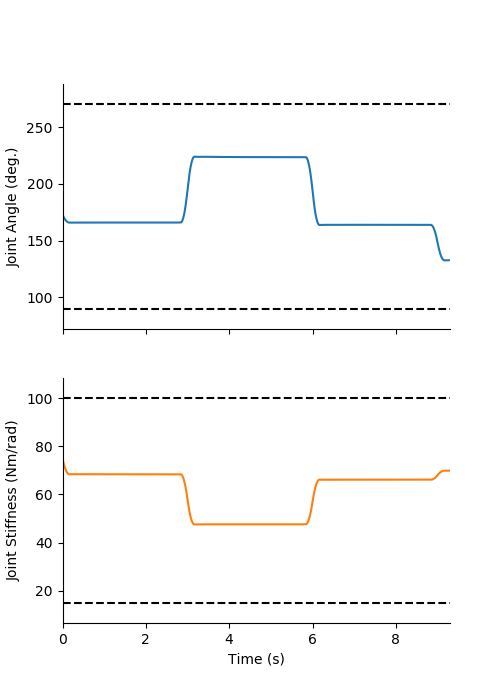
states_02-02.png
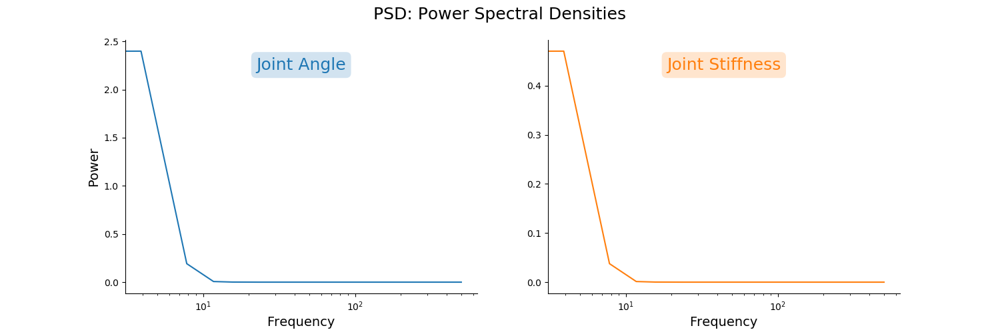
states_02-03.png
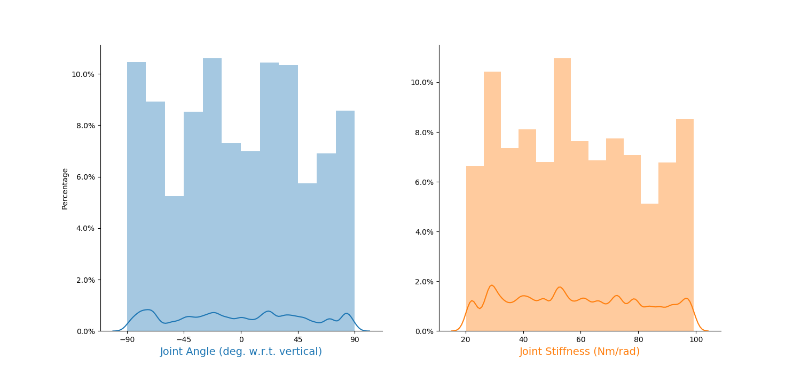
states_02-04.png
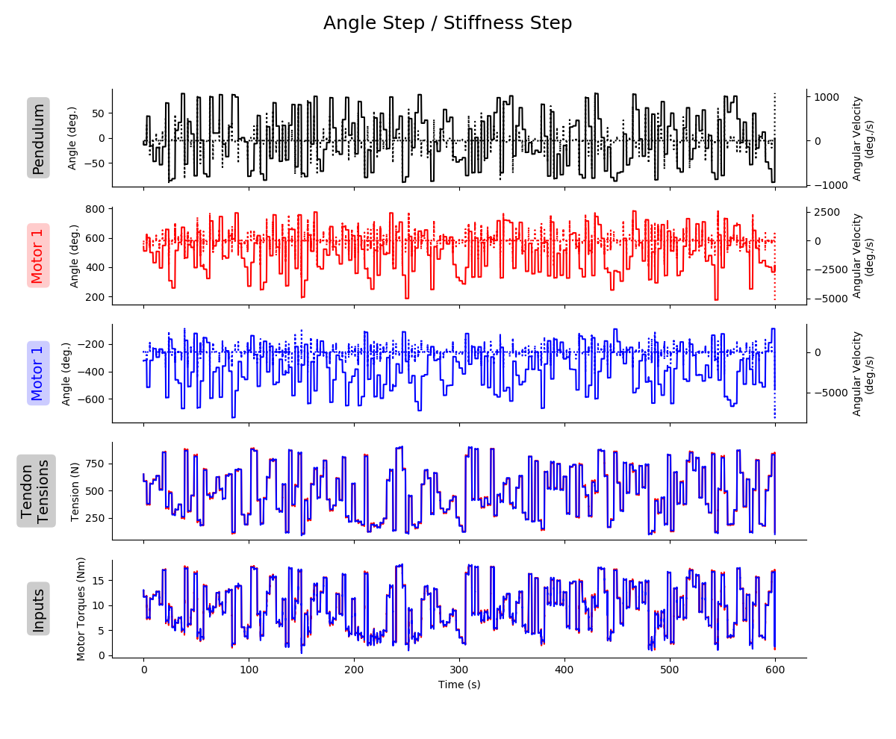
states_02-05.png
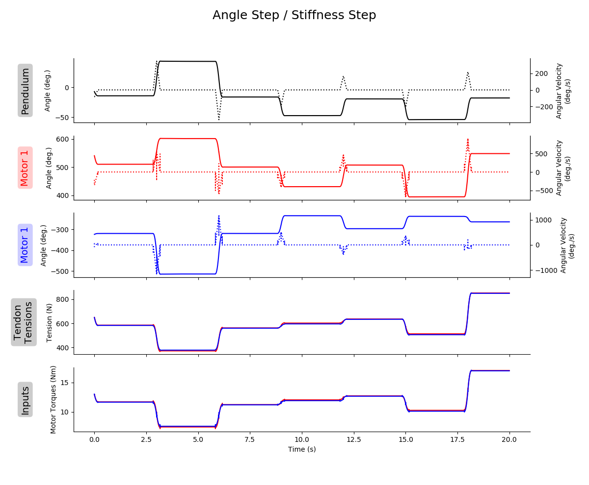
trajectory_01.png
Appended on 2020/04/24 at 15:27.13 PST.
Notes
Point-to-point experiment where it is assumed that the pendulum has reached some arbitrary (uniformly random) point in both joint angle and joint stiffness space such that
- the joint and motors have zero velocity/accelerations, and
- joint/motor angles and motor inputs can be found. A 2D KDE plot will demonstrate that the algorithm uniformly samples both spaces sufficiently, and the trajectory plots will show that the values are within a reasonable range.
Parameters
Figures
equil_P2P_02-01.png
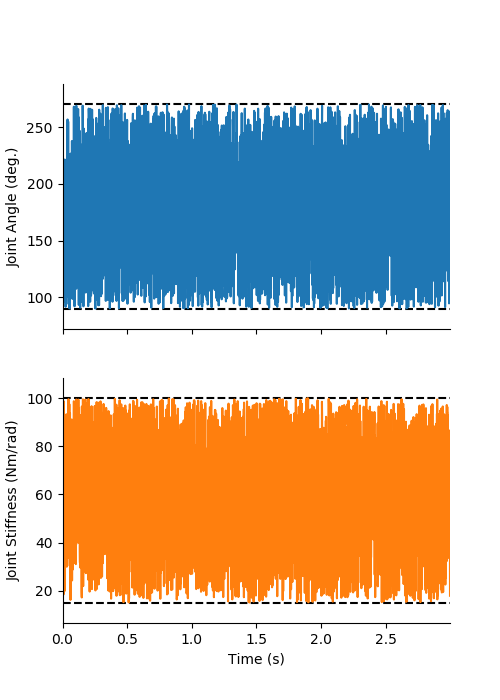
equil_P2P_02-02.png
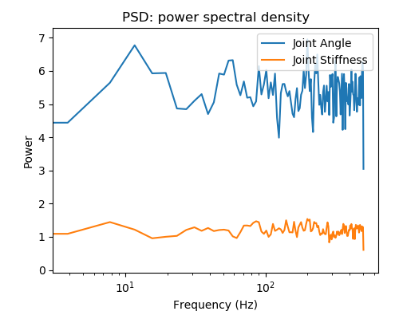
equil_P2P_02-03.png
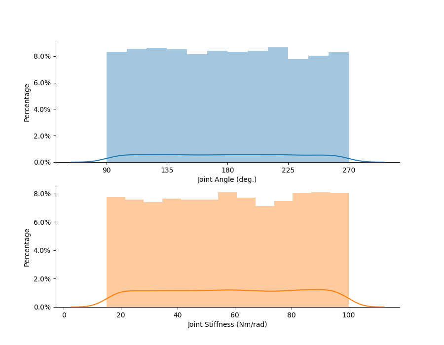
equil_P2P_02-04.png
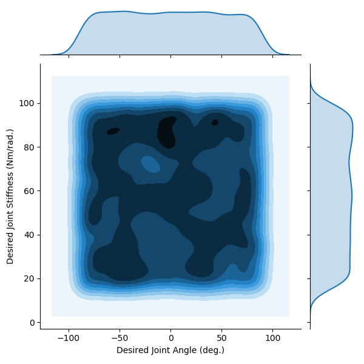
all_states_and_inputs_01.png
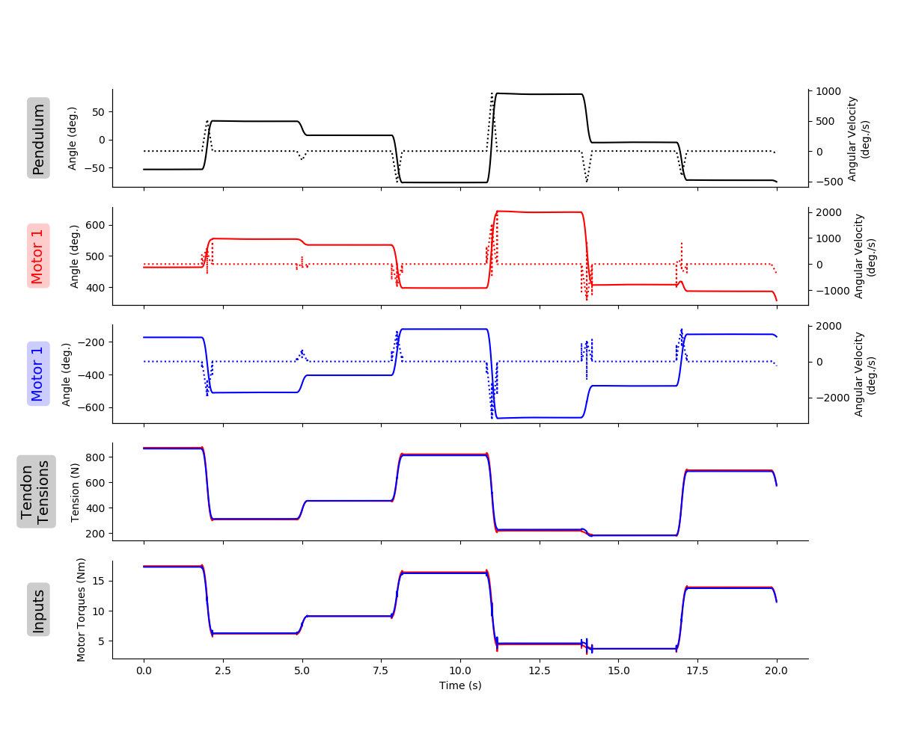
NOTE
The tendon tension and motor torques are highly correlated. The Pearson coefficients are ~0.999975 for both motor-tendon complexes. This would imply that it would be equivalent to replace the difficult to measure tendon tensions in our predictor algorithms with the readily available motor torques. In biology, we do have efference copies, but these do not directly correlate to tendon tension as they have to contend with nonlinear force-length, force-velocity relationships. Additionally, this is for a system that has not contact with the world. If the pendulum were to experience a sudden impact, the tendon tensions would change instantly, but the motor torques would deviate. But if the controller was predictive or proportional, then it would be likely that the motor torques would eventually become correlated again.